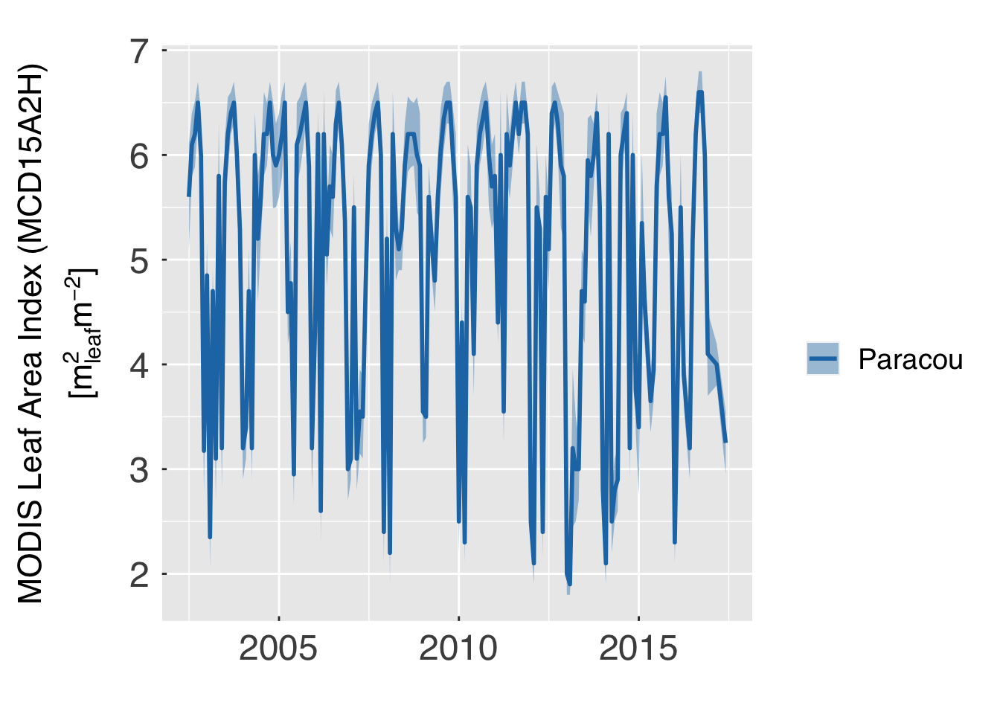
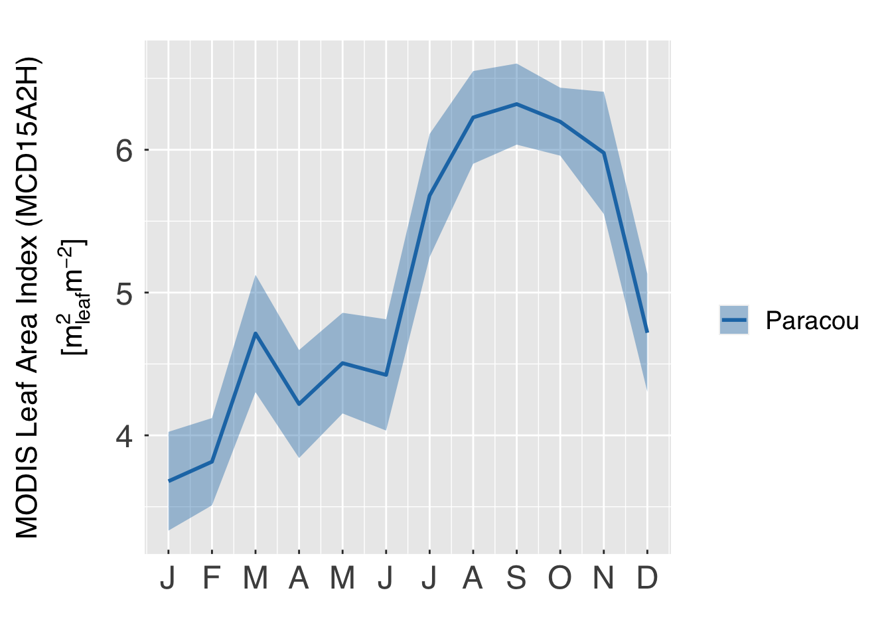

Main settings
Path and file locat0ion
Set paths and files for input and output.
- home_path. Typically the user’s home path. Useful
for building other paths.
path.expand("~") typically works
for all users.
- main_path. The main path for processing data. The
output path will be generated here.
- util_path. Directory with useful functions and
packages.
- input_path. The locat0ion where existing surface
and domain netcdf files are locat0ed
- output_path. The main output path for the data. A
sub-directory for this site will be created.
- plot_path. The path for plots.
home_path = path.expand("~")
util_path = file.path(home_path,"Util","RUtils")
main_path = file.path(home_path,"Data","MODIS_LAI","SouthAmerica")
input_path = file.path(main_path,"InputData")
output_path = file.path(main_path,"MCD15A2H_Site")
plot_path = file.path(main_path,"Figures")
Set the sites to process images. We put the information in a tibble
object poi_list containing the following variables.
- site. Site name (it must match the name of the
sub-directory of
input_path. Normally this is the same name
given to the data retrieval from AppEEARS)
- output. Output identifier, FATES style. This is
useful for adding the data to existing folders.
- lon. Longitude of the point of interest. The LAI
output will pool data from multiple pixels centred around this longitude
(defined by
radius).
- lat. Latitude of the point of interest. The LAI
output will pool data from multiple pixels centred around this
latitude.(defined by
radius).
- dxy. Intended grid size (we will generate a
1x1-point pseudo-grid for FATES).
- geographic. Coordinate system used for this site.
If
TRUE, we assum geographic coordinates (i.e., longitude
and latitude). If FALSE, we assume MODIS sinusoidal.
- radius. Sampling radius, in kilometres. The ideal
radius should allow a broad sample size without covering an area so
large that local characteristics of the site are lost. Homogeneous,
cloud-free regions can be effectively sampled with a small radius (~ 5
km or so), whereas regions with frequent cloud cover and substantial
deforestation may require larger radius (~ 20 km or so).
- igbp_include. A character with the classes to
include in the sample (represented by letters, case insensitive). Use
the table below to guide the selection.
- colour. A character with the colour to be used for
each site.
The following table shows which classes are included when each of the
flags are set to true
| LC_Type1 Class |
Description |
igbp_include letter |
| 1 |
Evergreen Needleleaf Forests |
a |
| 2 |
Evergreen Broadleaf Forests |
b |
| 3 |
Deciduous Needleleaf Forests |
c |
| 4 |
Deciduous Broadleaf Forests |
d |
| 5 |
Mixed Forests |
e |
| 6 |
Closed Scrublands |
f |
| 7 |
Open Scrublands |
g |
| 8 |
Woody Savannahs |
h |
| 9 |
Savannahs |
i |
| 10 |
Grasslands |
j |
| 11 |
Permanent Wetlands |
k |
| 12 |
Croplands |
l |
| 13 |
Urban and Built-up Lands |
m |
| 14 |
Cropland Natural Vegetation Mosaics |
n |
| 15 |
Permanent Snow and Ice |
o |
| 16 |
Barren |
p |
| 17 |
Water Bodies |
q |
|
|
|
Important. This code is known to take a lot of
memory, and it may be wiser to process a single site at a time (by
commenting out the other sites). Ideas on how to avoid this memory
runaway are welcome.
# List of polygons to process.
poi_list = tidyr::tribble( ~site , ~output , ~lon , ~lat, ~dxy, ~geographic, ~radius, ~igbp_include, ~colour
# , "BarroColorado", "1x1pt-bciPAN_v5.0_c20240616" , -79.846, 9.153, 1.0, TRUE, 18., "bd", "#6A3D9A"
, "Paracou" , "1x1pt-paracouGUF_v1.8_c20220114" , -52.912, 5.282, 1.0, TRUE, 18., "bd", "#1F78B4"
# , "Tapajos" , "1x1pt-tapajosPABR_v1.0_c20231201" , -54.959, -2.857, 1.0, TRUE, 15., "bd", "#62A3B4"
# , "Tanguro" , "1x1pt-tanguroMT-BR_v1.2_c20210913" , -52.409, -13.081, 1.0, TRUE, 12., "bd", "#A6CEE3"
# , "SerraTalhada" , "1x1pt-serratalhadaPEBR_v1.0_c20220114", -38.384, -7.968, 1.0, TRUE, 6., "bdfghi", "#FDBF6F"
# , "ESECSerido" , "1x1pt-esecseridoRNBR_v1.0_c20220119" , -37.251, -6.578, 1.0, TRUE, 6., "bdfghi", "#FF7F00"
# , "Petrolina" , "1x1pt-petrolinaPE-BR_v1.2_c20210913" , -40.370, -9.165, 1.0, TRUE, 9., "bdfghi", "#E31A1C"
)#end tribble
# Number of polygons to process
n_poi_list = nrow(poi_list)
Additional settings for the output file
- dat_version. Version of this data set.
- undef_out. A number to denote missing values in the
output (NetCDF) file. This is needed by NetCDF.
dat_version = "1.6"
undef_out = -9999.99
Additional settings for data processing:
- qcfine_mcdf15a2h. List of quality flag categories
in
FparLai_QC considered acceptable for MCD15A2H.
- exfine_mcdf15a2h. List of quality flag categories
in
FparExtra_QC considered acceptable for MCD15A2H.
- qcfine_mcd12q1. List of quality flag categories in
QC considered acceptable for MCD12Q1.
- ci_range. Range of data to show for time
series.
- alpha_ribbon. Opaqueness level for ribbon (0 means
transparent, 1 means fully opaque).
# Which quality flags to consider data high quality
qcfine_mcd15a2h = c(0,2,32,34) # Fine classes: FparLai_QC (MCD15A2H)
exfine_mcd15a2h = c(0,128) # Fine classes: FparExtra_QC (MCD15A2H)
qcfine_mcd12q1 = c(0) # Fine classes: QC (MCD12Q1)
# Set the range of data to show for time series.
ci_range = 2*pnorm(1)-1
# Opaqueness factor for ribbon
alpha_ribbon = 0.4
General plot options for ggplot
- gg_device. A vector with file types for figures.
These should be extensions of common file formats (e.g., pdf, eps, tif,
png, jpg). The complete list of options can be found in ggsave.
- gg_depth. The resolution of this figure (in pixels
per inch), in case the figure is saved in raster format (e.g., tif, png,
jpg). Ignored for vector format (e.g., pdf, eps).
- gg_ptsz. The typical size for fonts (in pt). Larger
sizes make it more readable, but shrink the plotting area.
- gg_width. The width of the output files. The units
are defined by
gg_units.
- gg_height. The height of the output files. The
units are defined by
gg_units.
- gg_units. Units for
gg_width and
`gg_height. Acceptable units are "in"
(inches), "cm" (centimetres) and "mm"
(millimetres).
- gg_screen. Show images in the documentation as
well. If
FALSE, the image files will be generated, but not
shown in the knitted documentation.
- gg_tmft. Format for time strings in the time
series. Check scale_x_datetime
for additional details.
- gg_ncolours. Number of colours to use in heat maps
(such as soil time series and plots by DBH class and PFT)
gg_device = c("pdf") # Output devices to use (Check ggsave for acceptable formats)
gg_depth = 300 # Plot resolution (dpi)
gg_ptsz = 18 # Font size
gg_width = 11.0 # Plot width (units below)
gg_height = 8.5 # Plot height (units below)
gg_units = "in" # Units for plot size
gg_screen = TRUE # Show plots on screen as well?
gg_tfmt = "%Y" # Format for time strings in the time series
gg_ncolours = 129 # Number of node colours for heat maps.
gg_fleg = 1./6. # Fraction of plotting area dedicat0ed for legend
# Number of output types.
ndevice = length(gg_device)
This concludes the initial settings. From this point on, you may not
need to change anything, unless you are debugging or adding new
features.
Data processing
Initial settings
First, we load some useful packages and tools, using the R script
load.everything.r. This will load all the R scripts at the
util_path directory.
source(file.path(util_path,"load.everything.r"),chdir=TRUE)
## + Load scripts from /Users/marcoslongo/Dropbox/Home/Util/RUtils.
Define output paths
# Create output paths
dummy = dir.create(path=output_path,recursive=TRUE,showWarnings=FALSE)
dummy = dir.create(path=plot_path ,recursive=TRUE,showWarnings=FALSE)
Load data
Here we loop through all the sites and load the data. First, we make
sure all data are in geographic coordinates (even if the data were
retrieved in MODIS sinusoidal coordinates). Then we eliminate points
with subpar quality from the analysis. We then aggregate the 8-day data
into monthly, to increase the sample size. We then append the
information to a global tibble, which will be used to make the
site-level time series.
We always convert the results to geographic coordinates before
aggregating and sub-sampling.
# Make sure no connection is open before reading the data
if ("nc_conn" %in% ls()) dummy = nc_close(nc=nc_conn)
# Initialise the data set
emean = NULL
# Loop through sites, and load the data.
for (p in sequence(n_poi_list)){
# Useful short names
p_site = poi_list$site [p]
p_output = poi_list$output [p]
p_lon = poi_list$lon [p]
p_lat = poi_list$lat [p]
p_geographic = poi_list$geographic[p]
p_radius = poi_list$radius [p]
p_igbp = match(unlist(strsplit(poi_list$igbp_include[p],split="")),letters)
p_input_path = file.path(input_path,p_site)
cat0(" + Retrieve data from ",p_site,".")
# Find data sets with MCD12Q1 and MCD15A2H data
p_mcd12q1 = list.files(path=p_input_path,pattern="^MCD12Q1(.+)\\.nc$")
p_mcd15a2h = list.files(path=p_input_path,pattern="^MCD15A2H(.+)\\.nc$")
# Make sure both files were unambiguously found
if ( (length(p_mcd12q1) != 1 ) || (length(p_mcd15a2h) != 1 ) ){
cat0( " At site ",p_site,".")
cat0( " Directory ",p_input_path,".")
cat0( " This directory should contain EXACTLY one file with MCD12Q1 data,")
cat0( " and one file with MCD15A2H. Instead, this is what was found." )
cat0( " - Number of MCD12Q1 files = ",length(p_mcd12q1 ),".")
cat0( " - Number of MCD15A2H files = ",length(p_mcd15a2h),".")
stop(paste0(" Fix the input path for this site before proceeding."))
}#end if ( (length(p_mcd12q1) != 1 ) || (length(p_mcd15a2h) != 1 ) )
# Read the MCD15A2H data
cat0(" - Read data from file ",p_mcd15a2h,".")
nc_conn = nc_open(filename=file.path(p_input_path,p_mcd15a2h))
# Get dimensions.
cat0(" > Get dimensions.")
if ( p_geographic ){
# Get dimensions
nc_nx = nc_conn$dim$lon$len
nc_ny = nc_conn$dim$lat$len
nc_nt = nc_conn$dim$time$len
nc_yswap = rev(sequence(nc_ny))
}else{
# Get dimensions
nc_nx = nc_conn$dim$xdim$len
nc_ny = nc_conn$dim$ydim$len
nc_nt = nc_conn$dim$time$len
nc_yswap = rev(sequence(nc_ny))
}#end if ( p_geographic )
# Retrieve the times. This happens in a few steps.
cat0(" > Find times.")
# Step 1. Get first time.
nc_time0 = nc_conn$dim$time$units
nc_time0 = gsub(pattern="days since ",replacement="" ,x=nc_time0)
nc_time0 = gsub(pattern=":" ,replacement=" ",x=nc_time0)
nc_time0 = gsub(pattern="-" ,replacement=" ",x=nc_time0)
nc_time0 = as.numeric(unlist(strsplit(x=nc_time0,split=" ")))
nc_time0 = make_date(year=nc_time0[1],month=nc_time0[2],day=nc_time0[3])
# Step 3. Get the times. Note that MODIS provides data in Julian calendar, not Gregorian.
# Because 2000 was a leap year in Gregorian and Julian, this distinction does not
# matter, but could matter in 2100 or if adapting this script to other data sets.
nc_times = nc_time0 + days(nc_conn$dim$time$vals)
# Retrieve coordinates depending on the reference system
if ( p_geographic){
cat0(" > Retrieve longitude/latitude coordinates.")
nc_lon = nc_conn$dim$lon$vals
nc_lat = rev(nc_conn$dim$lat$vals)
# Initialise the tibble
p_datum = tibble( ixy = rep(x=sequence(nc_nx*nc_ny) ,times=nc_nt)
, lon = rep(x=rep(x=nc_lon,times=nc_ny),times=nc_nt)
, lat = rep(x=rep(x=nc_lat,each =nc_nx),times=nc_nt)
, time = rep(x=nc_times,each=nc_nx*nc_ny)
, year = year(time)
, month = month(time)
, day = day(time)
)#end tibble
# Remove lubridate time
p_datum = p_datum %>% select(c(ixy,lon,lat,year,month,day))
}else{
cat0(" > Retrieve sinusoidal coordinates.")
# Get sinusoidal coordinates
nc_xsinus = nc_conn$dim$xdim$vals
nc_ysinus = rev(nc_conn$dim$ydim$vals)
# Get the radius
nc_erad = ncatt_get(nc=nc_conn,varid="crs",attname="radius_of_sphere")$value
# Initialise the tibble
p_datum = tibble( ixy = rep(x=sequence(nc_nx*nc_ny) ,times=nc_nt)
, xsinus = rep(x=rep(x=nc_xsinus,times=nc_ny),times=nc_nt)
, ysinus = rep(x=rep(x=nc_ysinus,each =nc_nx),times=nc_nt)
, time = rep(x=nc_times,each=nc_nx*nc_ny)
, year = year(time)
, month = month(time)
, day = day(time)
, lat = 180.*ysinus/nc_erad/pi
, lon = 180.*xsinus/nc_erad/pi/cos(lat*pi/180.)
)#end tibble
# Remove sinusoidal information and lubridate time.
p_datum = p_datum %>% select(c(ixy,lon,lat,year,month,day))
}#end if ( p_geographic)
# Calculate the distance to central point.
cat0(" > Find distances to reference point. ")
p_datum = p_datum %>%
mutate( dist = c( rdist.earth( x1 = cbind(p_datum$lon,p_datum$lat)
, x2 = cbind(p_lon,p_lat)
, miles = FALSE
)#end rdist.earth
)#end c
)#end mutate
# Retrieve the LAI, FPAR, and QC fields
cat0(" > Load MCD15A2H variables.")
p_datum = p_datum %>%
mutate( lai = c(ncvar_get(nc=nc_conn,varid="Lai_500m" )[,nc_yswap,])
, lai_sd = c(ncvar_get(nc=nc_conn,varid="LaiStdDev_500m" )[,nc_yswap,])
, fpar = c(ncvar_get(nc=nc_conn,varid="Fpar_500m" )[,nc_yswap,])
, fpar_sd = c(ncvar_get(nc=nc_conn,varid="FparStdDev_500m")[,nc_yswap,])
, qcflag = c(ncvar_get(nc=nc_conn,varid="FparLai_QC" )[,nc_yswap,])
, qcextra = c(ncvar_get(nc=nc_conn,varid="FparExtra_QC" )[,nc_yswap,])
)#end mutate
# Close the connection.
cat0(" > Close connection.")
dummy = nc_close(nc = nc_conn)
# Read the MCD12Q1 data
cat0(" - Read data from file ",p_mcd12q1,".")
nc_conn = nc_open(filename=file.path(p_input_path,p_mcd12q1))
if ( p_geographic ){
# Get dimensions
nc_nx12 = nc_conn$dim$lon$len
nc_ny12 = nc_conn$dim$lat$len
nc_nt12 = nc_conn$dim$time$len
}else{
# Get dimensions
nc_nx12 = nc_conn$dim$xdim$len
nc_ny12 = nc_conn$dim$ydim$len
nc_nt12 = nc_conn$dim$time$len
}#end if ( p_geographic )
# Check dimensions. Both the MCD15A2H and MCD12Q1 data sets should have the same spatial dimensions.
cat0(" > C dimensions.")
if ( (nc_nx12 != nc_nx) || (nc_ny12 != nc_ny) ){
cat0("-------------------------------------------------------")
cat0(" MCD12Q1 and MCD15A2H files are spatially incompatible!")
cat0("-------------------------------------------------------")
cat0(" Input file path = ",p_input_path )
cat0(" MCD12Q1 dimensions (x;y) = (",nc_nx12,";",nc_ny12,")" )
cat0(" MCD15A2H dimensions (x;y) = (",nc_nx ,";",nc_ny ,")" )
cat0("-------------------------------------------------------")
stop(" MCD12Q1 and MCD15A2H files should come from the same AppEEARS order!")
}#end if ( (nc_conn$dim$xdim$len != nc_nx) || (nc_conn$dim$xdim$len != nc_ny) )
# Load MCD12Q1 variables.
cat0(" > Load MCD12Q1 variables from most recent year.")
p_datum = p_datum %>%
mutate( igbp = rep(c(ncvar_get(nc=nc_conn,varid="LC_Type1")[,nc_yswap,nc_nt12]),each=nc_nt)
, qc12 = rep(c(ncvar_get(nc=nc_conn,varid="QC" )[,nc_yswap,nc_nt12]),each=nc_nt)
)#end mutate
# Eliminate data that had lower quality.
cat0(" > Remove data with lower quality.")
p_datum = p_datum %>%
filter( qcflag %in% qcfine_mcd15a2h ) %>%
filter( qcextra %in% exfine_mcd15a2h ) %>%
filter( qc12 %in% qcfine_mcd12q1 )
# Find the mediabs by month and year for each pixel. We use medians instead of averages
# because poor-quality data seem to be mostly biased low, so using medians should mitigate
# this effect.
cat0(" > Find pixel-based medians by month and year.")
p_emean = p_datum %>%
group_by(year,month,ixy) %>%
summarise( lon = mean(lon ,na.rm=TRUE)
, lat = mean(lat ,na.rm=TRUE)
, dist = mean(dist ,na.rm=TRUE)
, lai = median(lai ,na.rm=TRUE)
, lai_sd = sqrt(median(lai_sd^2 ,na.rm=TRUE))
, fpar = median(fpar ,na.rm=TRUE)
, fpar_sd = sqrt(median(fpar_sd^2 ,na.rm=TRUE))
, igbp = median(igbp ,na.rm=TRUE) ) %>%
ungroup() %>%
mutate ( lc_use = igbp %in% p_igbp ) %>%
mutate ( site = p_site
, lon0 = p_lon
, lat0 = p_lat ) %>%
select( site,lon0,lat0,ixy,year,month,lon,lat,dist
, lai,lai_sd, fpar,fpar_sd,igbp,lc_use ) %>%
arrange(ixy,year,month)
# Close the connection.
cat0(" > Close connection.")
dummy = nc_close(nc = nc_conn)
# Append data to the global data
emean = rbind( emean, p_emean)
# Remove data to try to save memory
dummy = rm(p_datum,p_emean)
dummy = gc()
}#end for (p in sequence(n_poi_list))
## + Retrieve data from Paracou.
## - Read data from file MCD15A2H.061_500m_aid0001.nc.
## > Get dimensions.
## > Find times.
## > Retrieve longitude/latitude coordinates.
## > Find distances to reference point.
## > Load MCD15A2H variables.
## > Close connection.
## - Read data from file MCD12Q1.061_500m_aid0001.nc.
## > C dimensions.
## > Load MCD12Q1 variables from most recent year.
## > Remove data with lower quality.
## > Find pixel-based medians by month and year.
## > Close connection.
Spatial average
Here all the data are aggregated by month, but not spatially. In this
step, we keep only the pixels that are within the pre-defined maximum
distance from the point of interest and that has one of the classes that
can be aggregated, and apply the spatial average for each month and
year.
# Find the lower and upper quantiles
quant_lwr = 0.5 - 0.5 * ci_range
quant_upr = 0.5 + 0.5 * ci_range
# Filter data and find the time series for each site.
cat0(" + Find time series by site.")
## + Find time series by site.
poi_emean = emean %>%
filter ( ( dist %le% p_radius ) & lc_use ) %>%
mutate ( lai_wgt = ifelse(test=lai_sd %gt% 0., yes = 1./lai_sd^2 , no = 0.)
, fpar_wgt = ifelse(test=fpar_sd %gt% 0., yes = 1./fpar_sd^2, no = 0.) ) %>%
group_by (site,year,month) %>%
summarise( lai_qmid = median(x=lai,na.rm=TRUE)
, lai_sdev = sqrt( median(x=lai_sd^2,na.rm=TRUE) )
, lai_n = sum( is.finite(lai) & is.finite(lai_sd) )
, fpar_qmid = median(x=fpar,na.rm=TRUE)
, fpar_sdev = sqrt(median(x=fpar_sd^2,na.rm=TRUE))
, fpar_n = sum( is.finite(fpar) & is.finite(fpar_sd) ) ) %>%
ungroup() %>%
mutate ( lai_qlwr = pmax(0., qnorm(p=quant_lwr,mean=lai_qmid ,sd=lai_sdev) )
, lai_qupr = qnorm(p=quant_upr,mean=lai_qmid ,sd=lai_sdev)
, fpar_qlwr = pmax(0., qnorm(p=quant_lwr,mean=fpar_qmid,sd=fpar_sdev) )
, fpar_qupr = pmin(1., qnorm(p=quant_upr,mean=fpar_qmid,sd=fpar_sdev) ) ) %>%
mutate ( when = make_date(year=year,month=month)) %>%
select_at(all_of( c("site","when"
,"lai_qlwr","lai_qmid","lai_qupr","lai_sdev","lai_n"
,"fpar_qlwr","fpar_qmid","fpar_qupr","fpar_sdev","fpar_n" ) ) ) %>%
arrange(site,when)
## Warning: Using `all_of()` outside of a selecting function was deprecated in tidyselect
## 1.2.0.
## ℹ See details at
## <https://tidyselect.r-lib.org/reference/faq-selection-context.html>
## This warning is displayed once every 8 hours.
## Call `lifecycle::last_lifecycle_warnings()` to see where this warning was
## generated.
cat0(" + Find mean annual cycle by site.")
## + Find mean annual cycle by site.
poi_mmean = poi_emean %>%
mutate( month = month(when)
, lai_wgt = ifelse(test=lai_sdev %gt% 0., yes = 1./lai_sdev^2 , no = 0.)
, fpar_wgt = ifelse(test=fpar_sdev %gt% 0., yes = 1./fpar_sdev^2, no = 0.) ) %>%
group_by (site,month) %>%
summarise( lai_qmid = mean(x=lai_qmid,na.rm=TRUE)
, lai_sdev = sqrt( mean(x=lai_sdev^2,na.rm=TRUE) )
, lai_n = sum( is.finite(lai_qmid) & is.finite(lai_sdev) )
, fpar_qmid = mean(x=fpar_qmid,na.rm=TRUE)
, fpar_sdev = sqrt(mean(x=fpar_sdev^2,na.rm=TRUE))
, fpar_n = sum( is.finite(fpar_qmid) & is.finite(fpar_sdev) ) ) %>%
ungroup() %>%
mutate ( lai_qlwr = pmax(0., qnorm(p=quant_lwr,mean=lai_qmid ,sd=lai_sdev) )
, lai_qupr = qnorm(p=quant_upr,mean=lai_qmid ,sd=lai_sdev)
, fpar_qlwr = pmax(0., qnorm(p=quant_lwr,mean=fpar_qmid,sd=fpar_sdev) )
, fpar_qupr = pmin(1., qnorm(p=quant_upr,mean=fpar_qmid,sd=fpar_sdev) ) ) %>%
arrange(site,month)
Output plots
First, we plot the time series of LAI for all sites.
cat0(" + Plot the time series of LAI for all sites by month and year.")
## + Plot the time series of LAI for all sites by month and year.
# Retrieve useful elements from the POI list
p_site = poi_list$site
p_colour = poi_list$colour
# First, turn sites into factors
show_emean = poi_emean %>% mutate( site = factor(site,levels=poi_list$site))
# Plot time series with the range
gg_emean = ggplot( data = show_emean
, mapping = aes_string( x = "when"
, y = "lai_qmid"
, ymin = "lai_qlwr"
, ymax = "lai_qupr"
, group = "site"
, colour = "site"
, fill = "site"
)#end aes_string
)#end ggplot
## Warning: `aes_string()` was deprecated in ggplot2 3.0.0.
## ℹ Please use tidy evaluation idioms with `aes()`.
## ℹ See also `vignette("ggplot2-in-packages")` for more information.
## This warning is displayed once every 8 hours.
## Call `lifecycle::last_lifecycle_warnings()` to see where this warning was
## generated.
gg_emean = gg_emean + scale_colour_manual(name="",aesthetics="colour",labels=p_site,values=p_colour)
gg_emean = gg_emean + scale_colour_manual(name="",aesthetics="fill" ,labels=p_site,values=p_colour)
# Add ribbons with lower and upper range, and also the medians as lines
gg_emean = gg_emean + geom_ribbon( alpha = alpha_ribbon, colour = "transparent", show.legend=TRUE)
gg_emean = gg_emean + geom_line( lwd = 1.0, show.legend=TRUE)
# Add local annotation
gg_emean = gg_emean + labs(title=element_blank())
gg_emean = gg_emean + scale_x_date(date_labels=gg_tfmt)
gg_emean = gg_emean + xlab(element_blank())
gg_emean = gg_emean + ylab( desc.unit( desc = "MODIS Leaf Area Index (MCD15A2H)"
, unit = untab$m2lom2
, twolines = TRUE
)#end desc.unit
)#end ylab
gg_emean = gg_emean + theme_grey( base_size = gg_ptsz
, base_family = "Helvetica"
, base_line_size = 0.5
, base_rect_size = 0.5
)#end theme_grey
# Additional settings
gg_emean = gg_emean + theme( axis.text.x = element_text( size = gg_ptsz
, margin = unit(rep(0.35,times=4),"char")
)#end element_text
, axis.text.y = element_text( size = gg_ptsz
, margin = unit(rep(0.35,times=4),"char")
)#end element_text
, axis.ticks.length = unit(-0.2,"char")
, axis.title.y = element_text( size = gg_ptsz * 0.9)
)#end theme
# Save plots.
for (d in sequence(ndevice)){
e_output = paste0("emean_lai_mcd15a2h_v061.",gg_device[d])
dummy = ggsave( filename = e_output
, plot = gg_emean
, device = gg_device[d]
, path = plot_path
, width = gg_width
, height = gg_height
, units = gg_units
, dpi = gg_depth
)#end ggsave
}#end for (d in sequence(ndevice))
# If sought, plot images on screen
if (gg_screen) plot(gg_emean)

cat0(" + Plot the mean annual cycle of LAI for all sites.")
## + Plot the mean annual cycle of LAI for all sites.
# Retrieve useful elements from the POI list
p_site = poi_list$site
p_colour = poi_list$colour
# First, turn sites into factors
show_mmean = poi_mmean %>% mutate( site = factor(site,levels=poi_list$site))
# Plot time series with the range
gg_mmean = ggplot( data = show_mmean
, mapping = aes_string( x = "month"
, y = "lai_qmid"
, ymin = "lai_qlwr"
, ymax = "lai_qupr"
, group = "site"
, colour = "site"
, fill = "site"
)#end aes_string
)#end ggplot
gg_mmean = gg_mmean + scale_colour_manual(name="",aesthetics="colour",labels=p_site,values=p_colour)
gg_mmean = gg_mmean + scale_colour_manual(name="",aesthetics="fill" ,labels=p_site,values=p_colour)
# Add ribbons with lower and upper range, and also the medians as lines
gg_mmean = gg_mmean + geom_ribbon( alpha = alpha_ribbon, colour = "transparent", show.legend=TRUE)
gg_mmean = gg_mmean + geom_line( lwd = 1.0, show.legend=TRUE)
# Add local annotation
gg_mmean = gg_mmean + labs(title=element_blank())
gg_mmean = gg_mmean + scale_x_continuous( breaks = sequence(12)
, labels = substring(month.abb,1,1)
)#end scale_x_continuous
gg_mmean = gg_mmean + xlab(element_blank())
gg_mmean = gg_mmean + ylab( desc.unit( desc = "MODIS Leaf Area Index (MCD15A2H)"
, unit = untab$m2lom2
, twolines = TRUE
)#end desc.unit
)#end ylab
gg_mmean = gg_mmean + theme_grey( base_size = gg_ptsz
, base_family = "Helvetica"
, base_line_size = 0.5
, base_rect_size = 0.5
)#end theme_grey
# Additional settings
gg_mmean = gg_mmean + theme( axis.text.x = element_text( size = gg_ptsz
, margin = unit(rep(0.35,times=4),"char")
)#end element_text
, axis.text.y = element_text( size = gg_ptsz
, margin = unit(rep(0.35,times=4),"char")
)#end element_text
, axis.ticks.length = unit(-0.2,"char")
, axis.title.y = element_text( size = gg_ptsz * 0.9)
)#end theme
# Save plots.
for (d in sequence(ndevice)){
m_output = paste0("mmean_lai_mcd15a2h_v061.",gg_device[d])
dummy = ggsave( filename = m_output
, plot = gg_mmean
, device = gg_device[d]
, path = plot_path
, width = gg_width
, height = gg_height
, units = gg_units
, dpi = gg_depth
)#end ggsave
}#end for (d in sequence(ndevice))
# If sought, plot images on screen
if (gg_screen) plot(gg_mmean)

Define the template for the global attributes.
# Define the code developer information (indirect way so the email is not visible).
developer_name = c( 111L, 103L, 110L, 111L, 76L, 32L, 115L, 111L, 99L, 114L, 97L, 77L)
developer_email = c( 118L, 111L, 103L, 46L, 108L, 98L, 108L, 64L, 111L, 103L, 110L, 111L
, 108L, 109L)
# Define the template. We will update the title in each time step.
att_template = list( title = "To be replaced when looping through months"
, version = dat_version
, date_created = paste0(as.character(now(tzone="UTC")), "UTC")
, source_code = "c6_modis-lai_poi.Rmd"
, code_notes = "LAI (MCD15A2H) for benchmarking ELM-FATES and CLM-FATES"
, code_developer = paste0( intToUtf8(rev(developer_name))
," <"
, intToUtf8(rev(developer_email))
,">"
)#end paste0
, data_info = paste0(" Data downloaded through AppEEARS"
," (https://lpdaac.usgs.gov/tools/appeears/)."
," MODIS (Collection 6) products used:"
," MCD15A2H (https://doi.org/10.5067/MODIS/MCD15A2H.061);"
," MCD12Q1 (https://doi.org/10.5067/MODIS/MCD12Q1.061)."
)#end paste0
)#end list
Create a single NetCDF file with all the averages by month and year.
We do not save the monthly average across all years because simulations
may or may not overlap with all the observation months and years.
for (p in sequence(n_poi_list)){
# Useful short names
p_site = poi_list$site [p]
p_output = poi_list$output [p]
p_lon = poi_list$lon [p]
p_lat = poi_list$lat [p]
p_dxy = poi_list$dxy [p]
cat0(" + Generate output data for ",p_site,".")
# Find precision for the coordinates (typically 1% of the grid size).
p_outprec = -floor(log10(p_dxy*0.01))
# Define output file
mlai_base = paste0(p_output,"_c6modis-summ.nc")
mlai_file = file.path(output_path,mlai_base)
# Standardise coordinates (and make sure latitude cannot exceed the poles).
outlon = round(p_lon,p_outprec) %% 360.
outlat = max(-90,min(90-0.5*p_dxy,round(p_lat,p_outprec)))
# Find edges.
edge_w = (outlon - 0.5 * p_dxy) %% 360.
edge_e = (outlon + 0.5 * p_dxy) %% 360.
edge_s = outlat - 0.5 * p_dxy
edge_n = outlat + 0.5 * p_dxy
# Extract data for this POI.
this_emean = poi_emean %>%
filter(site %in% p_site) %>%
arrange(when)
n_this_emean = nrow(this_emean)
# Extract time, and turn it into a difference in months since the first time
year_first = year (this_emean$when[1])
month_first = month(this_emean$when[1])
time_first = this_emean$when[1]
# Extract time, and turn it into a difference in months
tsince = as.numeric(difftime(this_emean$when,time_first,units="days"))
# In case file exists, it will be re-created.
cat0(" - Write averages by month and year to ",mlai_base,".")
if (file.exists(mlai_file)) file.remove(mlai_file)
# Add dimensions: longitude, latitude, and time. We do not automatically create the
# dimension variable for time because R would create it in double precision. Instead,
# we append variable time manually.
xx = ncdim_def( name="lon" ,units="",vals=1L ,create_dimvar=FALSE)
yy = ncdim_def( name="lat" ,units="",vals=1L ,create_dimvar=FALSE)
tt = ncdim_def( name="time" ,units="",vals=seq_along(tsince),create_dimvar=FALSE)
ss = ncdim_def( name="scalar",units="",vals=1L ,create_dimvar=FALSE)
# List of dimensions, useful for setting variables.
nc_xy = list (xx,yy)
nc_xyt = list(xx,yy,tt)
nc_t = list (tt)
nc_s = list(ss)
xy = c(1,1)
xyt = c(1,1,n_this_emean)
# Start list with variables. First we put the coordinates
nc_vlist = list()
nc_vlist$LONGXY = ncvar_def( name = "LONGXY"
, units = "degrees_east"
, dim = nc_xy
, missval = undef_out
, longname = "longitude"
)#end ncvar_def
nc_vlist$LATIXY = ncvar_def( name = "LATIXY"
, units = "degrees_north"
, dim = nc_xy
, missval = undef_out
, longname = "latitude"
)#end ncvar_def
nc_vlist$EDGEW = ncvar_def( name = "EDGEW"
, units = "degrees_east"
, dim = nc_s
, missval = undef_out
, longname = "western edge in atmospheric data"
)#end ncvar_def
nc_vlist$EDGEE = ncvar_def( name = "EDGEE"
, units = "degrees_east"
, dim = nc_s
, missval = undef_out
, longname = "eastern edge in atmospheric data"
)#end ncvar_def
nc_vlist$EDGES = ncvar_def( name = "EDGES"
, units = "degrees_north"
, dim = nc_s
, missval = undef_out
, longname = "southern edge in atmospheric data"
)#end ncvar_def
nc_vlist$EDGEN = ncvar_def( name = "EDGEN"
, units = "degrees_north"
, dim = nc_s
, missval = undef_out
, longname = "northern edge in atmospheric data"
)#end ncvar_def
nc_vlist$time = ncvar_def( name = "time"
, units = paste0( "days since ",as.character(time_first)
, " 00:00:00 UTC"
)#end paste0
, dim = nc_t
, missval = undef_out
, longname = "observation time"
)#end ncvar_def
# Include LAI and fPAR (we duplicate so it works with both the host land model and FATES.
nc_vlist$LAI = ncvar_def( name = "LAI"
, units = "m2/m2"
, dim = nc_xyt
, missval = undef_out
, longname = "Leaf area index (HLM)"
)#end ncvar_def
nc_vlist$FPAR = ncvar_def( name = "FPAR"
, units = "1"
, dim = nc_xyt
, missval = undef_out
, longname = "Fraction of photosynthetically active radiation (HLM)"
)#end ncvar_def
nc_vlist$FATES_LAI = ncvar_def( name = "FATES_LAI"
, units = "m2/m2"
, dim = nc_xyt
, missval = undef_out
, longname = "Leaf area index (FATES)"
)#end ncvar_def
nc_vlist$FATES_FPAR = ncvar_def( name = "FATES_FPAR"
, units = "1"
, dim = nc_xyt
, missval = undef_out
, longname = "Fraction of photosynthetically active radiation (FATES)"
)#end ncvar_def
# Create file
nc_conn = nc_create(filename=mlai_file,vars=nc_vlist,verbose=FALSE)
#---~---
# Put coordinates, tower height and attributes to the netcdf
#---~---
# Longitude, append time-invariant tag
dummy = ncvar_put(nc=nc_conn,varid="LONGXY" ,vals=array(data=outlon ,dim=xy))
dummy = ncatt_put(nc=nc_conn,varid="LONGXY" ,attname="mode" ,attval="time-invariant")
# Latitude, append time-invariant tag
dummy = ncvar_put(nc=nc_conn,varid="LATIXY" ,vals=array(data=outlat ,dim=xy))
dummy = ncatt_put(nc=nc_conn,varid="LATIXY" ,attname="mode" ,attval="time-invariant")
# Western edge, append time-invariant tag
dummy = ncvar_put(nc=nc_conn,varid="EDGEW" ,vals=edge_w)
dummy = ncatt_put(nc=nc_conn,varid="EDGEW" ,attname="mode" ,attval="time-invariant")
# Eastern edge, append time-invariant tag
dummy = ncvar_put(nc=nc_conn,varid="EDGEE" ,vals=edge_e)
dummy = ncatt_put(nc=nc_conn,varid="EDGEE" ,attname="mode" ,attval="time-invariant")
# Southern edge, append time-invariant tag
dummy = ncvar_put(nc=nc_conn,varid="EDGES" ,vals=edge_s)
dummy = ncatt_put(nc=nc_conn,varid="EDGES" ,attname="mode" ,attval="time-invariant")
# Northern edge, append time-invariant tag
dummy = ncvar_put(nc=nc_conn,varid="EDGEN" ,vals=edge_n)
dummy = ncatt_put(nc=nc_conn,varid="EDGEN" ,attname="mode" ,attval="time-invariant")
# Time, append calendar type.
dummy = ncvar_put(nc=nc_conn,varid="time" ,vals=tsince)
dummy = ncatt_put(nc=nc_conn,varid="time" ,attname="calendar",attval="gregorian")
# Put LAI to the netcdf
dummy = ncvar_put(nc=nc_conn,varid="LAI" ,vals=array(data=this_emean$lai_qmid,dim=xyt))
dummy = ncatt_put(nc=nc_conn,varid="LAI" ,attname="mode",attval="time-dependent")
# Put FPAR to the netcdf
dummy = ncvar_put(nc=nc_conn,varid="FPAR" ,vals=array(data=this_emean$fpar_qmid,dim=xyt))
dummy = ncatt_put(nc=nc_conn,varid="FPAR" ,attname="mode",attval="time-dependent")
# Put LAI to the netcdf
dummy = ncvar_put(nc=nc_conn,varid="FATES_LAI" ,vals=array(data=this_emean$lai_qmid,dim=xyt))
dummy = ncatt_put(nc=nc_conn,varid="FATES_LAI" ,attname="mode",attval="time-dependent")
# Put FPAR to the netcdf
dummy = ncvar_put(nc=nc_conn,varid="FATES_FPAR",vals=array(data=this_emean$fpar_qmid,dim=xyt))
dummy = ncatt_put(nc=nc_conn,varid="FATES_FPAR",attname="mode",attval="time-dependent")
# Add title specific for this month/year.
nc_title = paste0( "Averages by month and year for ",p_site)
att_global = modifyList( x = att_template, val = list( title = nc_title ))
# Loop through global attributes
for (l in seq_along(att_global)){
# Current attribute information
att_name = names(att_global)[l]
att_value = att_global[[l]]
# Add attribute
dummy = ncatt_put(nc=nc_conn,varid=0,attname=att_name,attval=att_value)
}#end for (l in seq_along(att_global))
# Close the file
dummy = nc_close(nc_conn)
}#end for (p in sequence(n_poi_list))